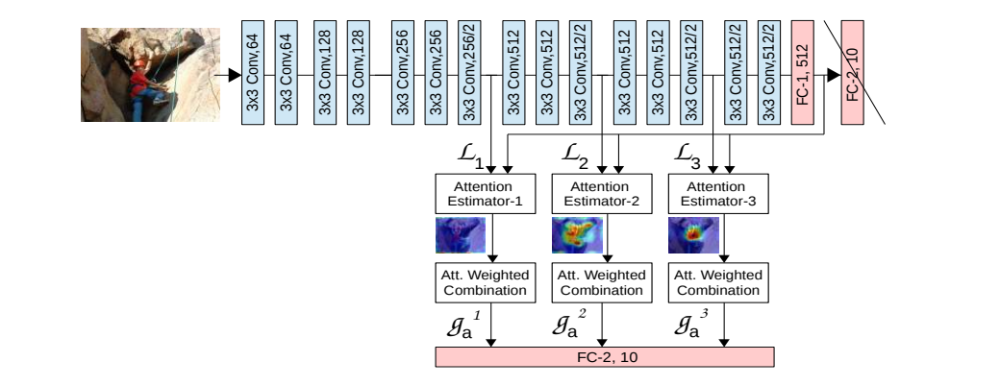

1. どんなもの？
Attention Mapを使ってCNNが分類を行うときに使う有効な視覚的情報の空間的なサポートを見つけ出し，利用することで一般物体認識の精度を向上させる．
2. 先行研究と比べてどこがすごい？
- Saliency Mapを用いることで有効な領域の情報を重視し，無関係な情報を抑制する
- Local feature vector (CNNの中間層の出力)とGlobal feature vector (CNNの後段のFCの出力)を組み合わせる
- 適合度によって重要なLocal feature vectorだけを分類に活用する
3. 技術や手法の"キモ"はどこ？
学習可能なAttention Estimatorを通常のCNNに付け加えるだけで，Attention Mapによる解釈性，精度の向上．

-
$S$個のAttention Moduleを↑のようにCNNに加える．$s$個目のAttention Moduleは，長さ$M$のベクトル$N$個からなる集合である．
-
$s$個目のlocal feature vectorは $$ \mathbf{L^s} = { \mathbf{l_1^s}, \mathbf{l_2^s}, …, \mathbf{l_N^s} } $$ ここで，ベクトルの長さ$M$はFeature Mapのチャネル数に等しく，ベクトルの個数$N$はFeature Mapの画素数に等しい．
-
全結合層で各ベクトルの長さをglobal feature vector $\mathbf{g}$の長さ$M'$に揃える $$ \mathbf{\hat{l^s_i}} = w\cdot{\mathbf{l_i^s}} $$
-
local feature vectorとglobal feature vectorから各画素のCompatibility scoresを求める $$ C^s(\mathbf{\hat{L_s}}, \mathbf{g}) = {c_1^s, c_2^s, …, c_n^s} $$ $$ c_i^s = \mathbf{\hat{l^s_i}} \cdot{\mathbf{g}} $$
-
Compatibility scoresに対して，softmaxを適用してAttention Mapを算出 $$ a_i^s = \frac{exp(c_i^s)}{\sum_j^N exp(c_j^s)} $$
-
各モジュールの出力はAttention MapとFeature Mapの内積 $$ \mathbf{g^s} = \sum_i^n a_i^s \cdot{\mathbf{l_i^s}} $$
-
最終的には，全Moduleの出力を連結することでModule全体の出力として，最後にFC層
$$ \mathbf{g_a} = { \mathbf{g_1}, \mathbf{g_2}, …, \mathbf{g_S}} $$ $$ O = W \cdot{\mathbf{g_a}} $$
4. どうやって有効だと検証した？
CIFAR10，CIFAR100，CUB200，SVHNで実験． BaselineであるVGG，VGG+GAP, VGG+PAN, ResNet164と比較して精度向上． 浅い層では局所的な情報を重視し，深い層では物体全体の情報を重視していることがわかる
5. 議論はあるか？
Adversarial AttackやCross Domainな認識タスクに対しても有効であることが示されている．